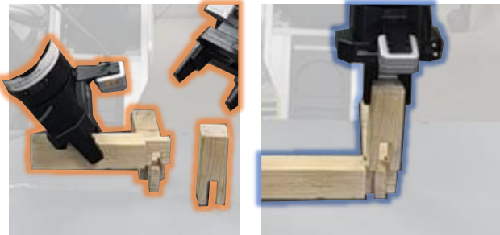
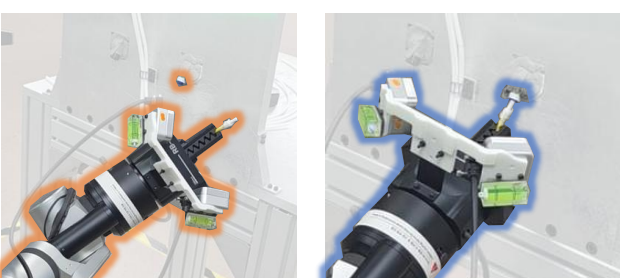
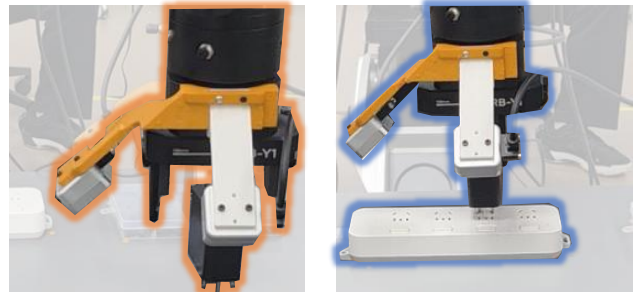
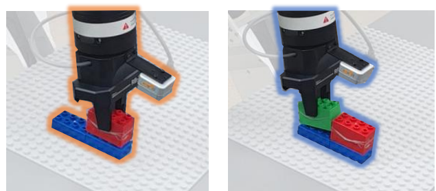
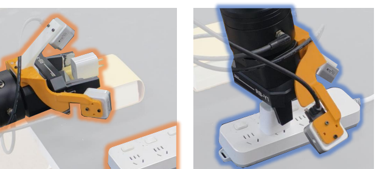
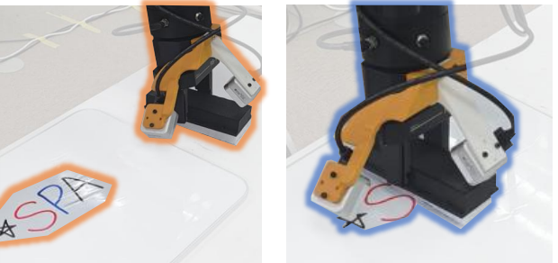

Prediction-supervised sensorimotor representations connect physical history to action generation.
PSR learns representations from multimodal sensorimotor signals by jointly forecasting future force/torque sequences, future joint-effort sequences, and terminal joint-state displacement. PSR-VLA integrates the resulting hierarchy into selected Action Expert layers through gated cross-attention.
Real-world task suite
Six tasks across three levels of contact difficulty.
The desktop layout reads by column: hard, medium, and easy. Each slot is reserved for a short, muted rollout from the corresponding PSR-VLA evaluation.
These stress tests reuse the PSR-VLA checkpoints from the main experiments without expanding the training sets or performing additional training. They are reported separately and are not included in the six-task success-rate averages.
Main-experiment checkpoint · no added training
Water-Hose Insertion
442 / 450
9-min time-compressed slot
442/450successful trials
98.2%success rate
9test positions
50trials per position
Main-experiment checkpoint · no added training
Interlocking Joint Assembly
48 / 50
60-min test video slot
48/50successful trials
96.0%success rate
50consecutive trials
0retries or recovery
Additional evaluations
Two behaviors beyond the main benchmark.
These supplementary experiments broaden the evaluation beyond the fixed six-task comparison and are reported separately from the success-rate averages.
Additional experiment 01
Cable & LEGO Sorting
MP4 slot
Mixed-object sorting with deformable cable and rigid LEGO components.Additional experiment 02
Long-Horizon Servo Packing
MP4 slot
Extended-duration execution of the servo packing workflow.
Method
The PSR-VLA Model
PSR receives multiview visual tokens, force/torque history, robot state, and joint-effort history. Predictive pretraining produces an ordered hierarchy of prediction-supervised representations that condition selected layers of the Action Expert.
Figure 1. PSR learns prediction-supervised sensorimotor representations through multi-target forecasting and integrates them into selected Action Expert layers.
01
Predictive pretraining
A multimodal Transformer processes visual tokens together with force/torque, robot-state, and joint-effort histories. A shared decoder reads every retained layer and predicts future force/torque, future joint effort, and terminal joint-state displacement, shaping a hierarchy that captures contact response, actuation load, and motion intent.
02
Sensorimotor representation integration
During action learning, selected Action Expert layers query the corresponding PSR representations through gated cross-attention. Independently learned gates regulate each residual update, exposing progressively fused physical context at successive stages while preserving the pretrained action pathway.
Quantitative evaluation
Success across all six tasks.
Success rates are measured over 20 consecutive trials per task. Tasks follow the hard-to-easy order in the experimental setup; Overall reports total successes over 120 trials.
Real-world task success rate (%)
π0.5ForceVLAForceVLA2PSR-VLA
Success rate (%)
100806040200
HardMediumEasyOverall
45606590

Interlocking Joint
65707595

Water- Hose
60608580

3-Hole Plug
65705590

LEGO
65758095

2-Hole Plug
708075100

Board Wipe
61.769.272.591.7
110/ 120
Overall
Primary result91.7%
110 / 120 successful trials
Predictive sensorimotor representation learning improves performance across difficulty levels.
Under the same backbone and evaluation protocol, PSR-VLA reaches 110/120 successful trials, compared with 74/120 for π0.5, 83/120 for ForceVLA-π0.5, and 87/120 for ForceVLA2-π0.5. These correspond to gains of 30.0, 22.5, and 19.2 percentage points, respectively. PSR-VLA achieves the highest success rate on five of the six tasks.
Across the tabulated run and three additional PSR-VLA training runs, performance is 109.5 ± 2.5 successes out of 120, or 91.3 ± 2.1% (mean ± s.d.). This stability analysis is PSR-VLA-only and is not a seed-matched comparison with the baselines.
The gains remain consistent from hard tasks (92.5% mean) to medium (85.0%) and easy tasks (97.5%). Three-Hole Plug Insertion is the only task not led by PSR-VLA, where ForceVLA2-π0.5 reaches 85% compared with 80% for PSR-VLA.
Matched qualitative comparison
Maintaining the insertion axis under contact.
Both policies begin the Three-Hole Plug task with closely matched plug-to-socket alignment. As contact loads build, π0.5 develops lateral drift and ends off-axis. PSR-VLA preserves axial alignment and directs the applied force vertically downward, completing the insertion.
π0.5 baseline
Three-Hole Plug Insertion
Failure · Lateral drift
π0.5 MP4 slot
Initial alignment is comparable, but lateral displacement grows during contact and the plug moves away from the insertion axis.
PSR-VLA · Ours
Three-Hole Plug Insertion
Success · Vertical insertion
PSR-VLA MP4 slot
PSR-VLA maintains axial alignment, applies a stable downward force, and completes a clean insertion.
Representative paired rollouts with comparable initial alignment. This example illustrates contact behavior and is not used to estimate the overall success rate.
Ablation studies
Where the predictive hierarchy matters.
Controlled variants test predictive initialization, distinct depth-wise representations, multi-depth integration, and representation-to-layer alignment on Water-Hose Insertion and Two-Hole Plug Insertion.
Controlled ablations20 trials per task · average across two tasks
Output-Level ConditioningCondition only at the Action Expert output
10/2050%
11/2055%
52.5%mean
Shared Deepest RepresentationReuse z6 at all six injection sites
14/2070%
15/2075%
72.5%mean
PSR-VLAFull model
19/2095%
19/2095%
95.0%mean
Predictive representation
What PSR learns before acting.
On held-out sequences, PSR reduces normalized MSE over a persistence baseline by 54.9% for future force/torque, 48.1% for future joint effort, and 87.5% for terminal joint-state displacement.
Figure 2. Stage-1 predictions on held-out offline sequences; displayed channels are selected by event-associated ground-truth variation rather than prediction accuracy.
Resources
Citation
Venue, paper, code, and model links will be updated when the public release information is confirmed.
@article{li2026psrvla,
title = {PSR-VLA: Predictive Sensorimotor Representation Learning
for Contact-Rich Manipulation},
author = {Li, Shengbao and Xu, Peng and Tang, Chao and
Wang, Jiaheng and Yin, Hong and Weihao and Zhu, Jingxuan and
Chen, Jiangtao and Li, Tingguang},
journal = {Under Review},
year = {2026}
}